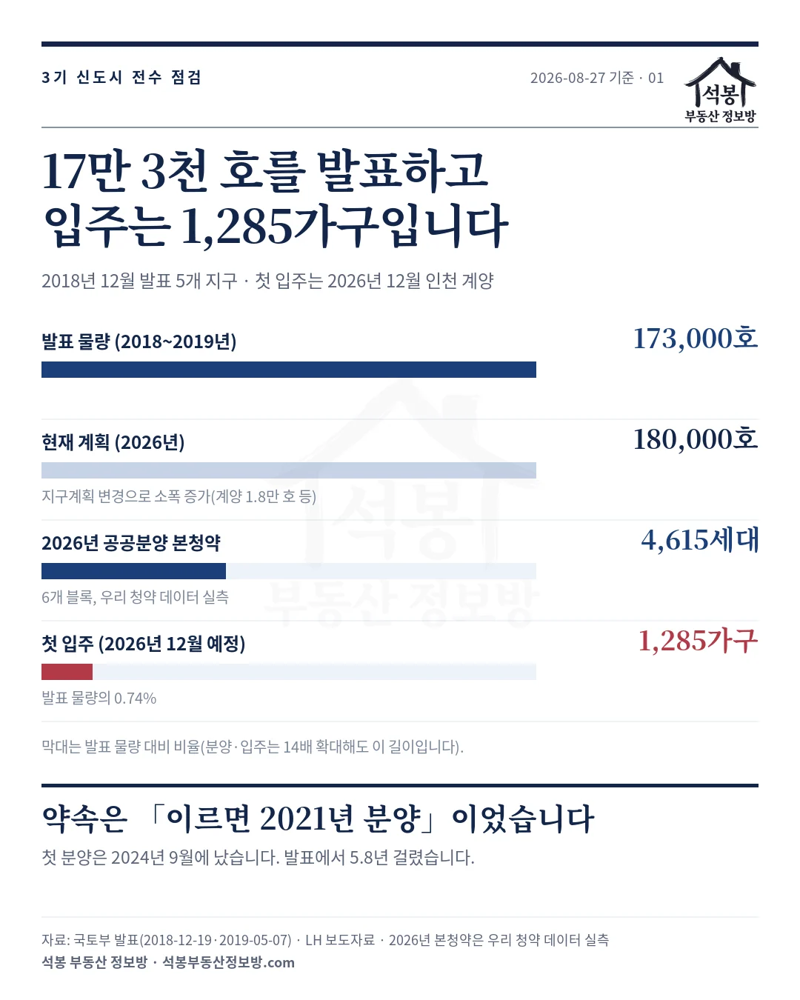
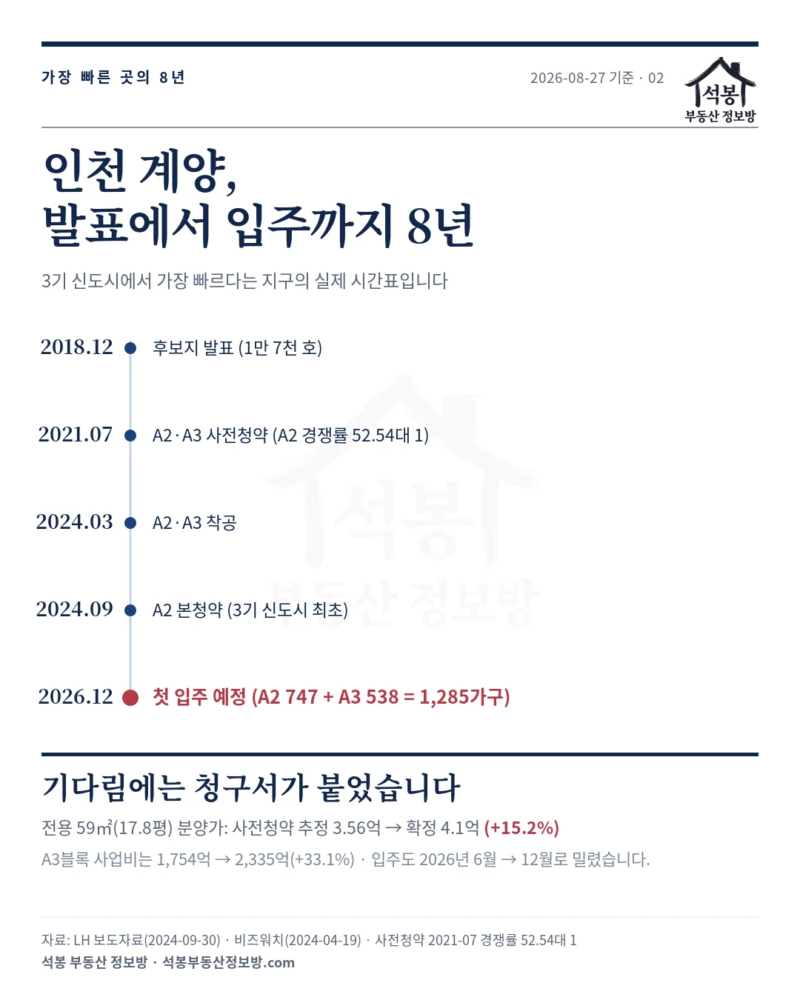
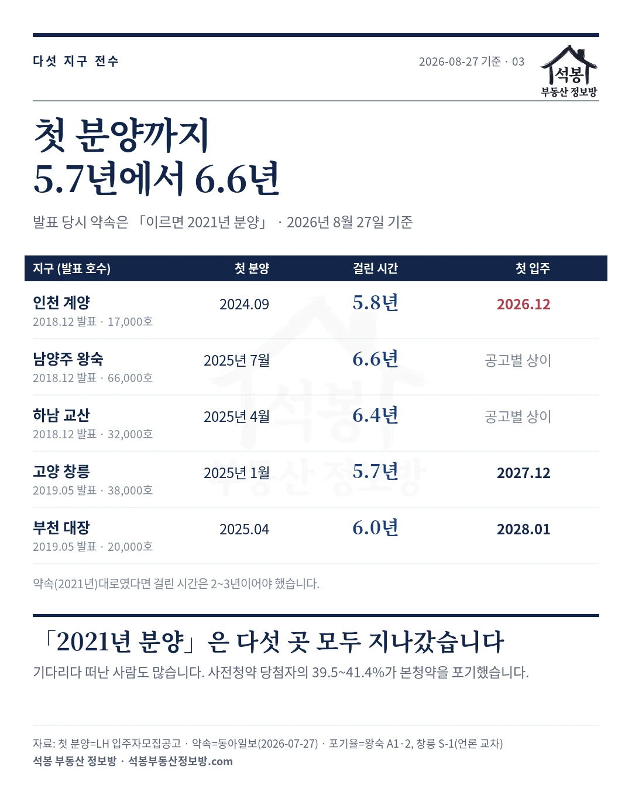
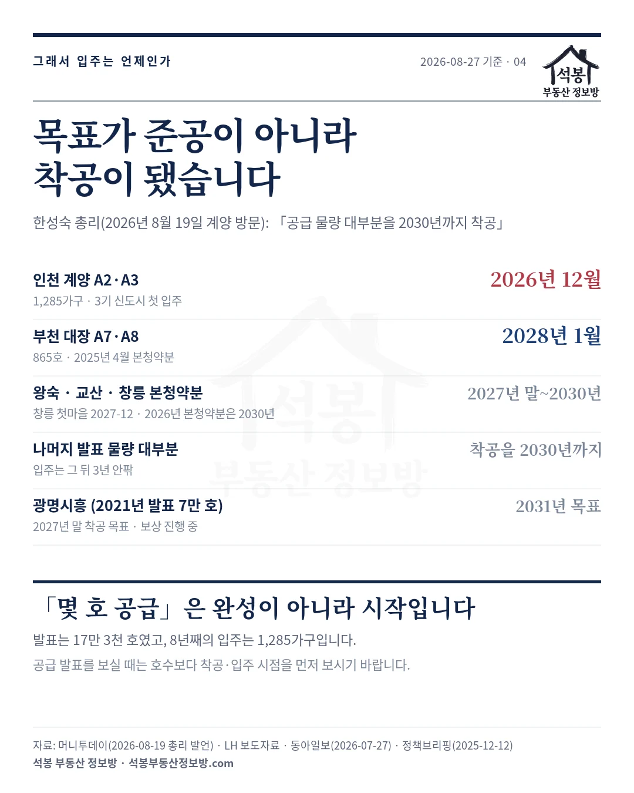

2026년 8월 19일, 국무총리가 인천 계양의 3기 신도시 공사 현장을 찾아 이렇게 말했습니다.
「공급 물량 대부분이 2030년까지 착공될 수 있도록 총 수단을 가용해야 한다.」
2018년 12월에 발표한 신도시입니다. 발표 12년째가 되는 해의 목표가 준공도 입주도 아닌 착공입니다.
그래서 세어 봤습니다. 「몇 호 공급」이라던 발표는 8년 동안 실제로 몇 호가 됐을까요.
하나. 17만 3천 호 중에 입주는 1,285가구
3기 신도시 다섯 곳은 두 번에 걸쳐 발표됐습니다. 2018년 12월 19일에 남양주 왕숙(6만 6천 호), 하남 교산(3만 2천 호), 인천 계양(1만 7천 호)이, 2019년 5월 7일에 고양 창릉(3만 8천 호), 부천 대장(2만 호)이 나왔습니다. 합해서 17만 3천 호입니다. 발표 당시 정부는 이르면 2021년에 분양이 가능하도록 속도를 내겠다고 했습니다.
2026년 8월 27일 기준으로 그 깔때기는 이렇게 좁아져 있습니다.
| 단계 | 규모 | 비고 |
|---|---|---|
| 발표 물량 (2018~2019년) | 173,000호 | 이후 지구계획 변경으로 180,000호로 조정 (계양 18,000호 등) |
| 착공 (2025년까지) | 13개 블록 | LH 발표 · 2026년에도 추가 착공 진행 중 |
| 2026년 공공분양 본청약 | 4,615세대 | 6개 블록, 저희 청약 데이터로 직접 센 값 |
| 첫 입주 (2026년 12월 예정) | 1,285가구 | 발표 물량의 0.74% |
첫 입주가 인천 계양 A2·A3블록 1,285가구입니다. 발표 물량의 0.74%, 백 호를 약속하면 여덟 해 뒤에 한 호가 채 안 들어온 셈입니다. 분명히 해 둘 것은, 이것이 사업 실패라는 뜻은 아니라는 점입니다. 신도시는 원래 오래 걸립니다. 문제는 발표할 때는 아무도 그 시간을 말해 주지 않는다는 것입니다.

가입하시면 지역 시장조사 보고서(약식)를 2회 무료로 요청하실 수 있습니다.
둘. 가장 빠르다는 계양의 8년
3기 신도시에서 가장 빠르다는 인천 계양의 시간표를 그대로 펼치면 이렇습니다.
| 시점 | 무슨 일이 있었나 |
|---|---|
| 2018년 12월 19일 | 후보지 발표 (1만 7천 호) |
| 2021년 7월 | A2·A3블록 사전청약 · A2 경쟁률 52.54대 1 |
| 2024년 3월 29일 | A2·A3블록 착공 |
| 2024년 9월 30일 | A2블록 본청약 (3기 신도시 통틀어 최초 분양) |
| 2026년 12월 | 첫 입주 예정 (A2 747가구 + A3 538가구) |
발표에서 입주까지 8년입니다. 그리고 이 8년은 그냥 기다림이 아니었습니다. 2021년 사전청약 때 전용 59㎡(17.8평)의 추정 분양가는 3억 5,600만원이었는데, 2024년 본청약에서 확정된 가격은 4억 1천만원이었습니다. 기다리는 사이 15.2%가 올랐습니다. 바로 옆 A3블록의 총사업비는 1,754억원에서 2,335억원으로 33.1% 불었고, 입주 시점도 사업계획승인 당시의 2026년 6월에서 12월로 반년 밀렸습니다.
사전청약이라는 제도 자체가 이 시차를 견디지 못했습니다. 남양주 왕숙 A1·2 사전청약 당첨자의 39.5%, 고양 창릉 S-1 당첨자의 41.4%가 본청약을 포기했고, 공공 사전청약 제도는 2024년 5월 신규 시행이 중단됐습니다.

셋. 다섯 지구 전수: 첫 분양까지 5.7년에서 6.6년
계양만 늦은 게 아닙니다. 다섯 지구를 전부 세면 이렇습니다.
| 지구 | 발표 | 발표 호수 | 첫 분양 | 걸린 시간 | 첫 입주 |
|---|---|---|---|---|---|
| 인천 계양 | 2018년 12월 | 17,000호 | 2024년 9월 | 5.8년 | 2026년 12월 |
| 남양주 왕숙 | 2018년 12월 | 66,000호 | 2025년 7월 | 6.6년 | 공고별 상이 |
| 하남 교산 | 2018년 12월 | 32,000호 | 2025년 4월 | 6.4년 | 공고별 상이 |
| 고양 창릉 | 2019년 5월 | 38,000호 | 2025년 1월 | 5.7년 | 2027년 12월 |
| 부천 대장 | 2019년 5월 | 20,000호 | 2025년 4월 | 6.0년 | 2028년 1월 |
「이르면 2021년 분양」이 약속이었으니 2~3년 안에 분양이 나왔어야 했는데, 실제로는 다섯 곳 모두 5.7년에서 6.6년이 걸렸습니다. 가장 빨랐던 창릉 첫마을(2025년 1월 공고, 1,792호)조차 발표에서 5.7년입니다. 정부가 바뀌어도 이 시계는 크게 다르지 않았습니다. 늦은 이유는 어느 한 정부의 잘못이라기보다 구조에 가깝습니다. 토지 보상에서 감정평가액을 받아들이지 않는 소유자와의 협의, 명도 소송, 문화재 조사 같은 절차가 해를 잡아먹었고, 거기에 2022년 이후의 공사비 급등과 부동산 PF 경색이 겹쳤습니다.
이 다섯 지구의 인접 시세는 저희 지도에서 바로 보실 수 있습니다. 박촌동(계양 지구 옆), 다산동(왕숙 인접), 지축동(창릉 인접), 원종동(대장 인접)입니다.

넷. 이제 목표는 준공이 아니라 착공입니다
그래서 지금 정부의 목표 문장을 다시 읽어 보면 무게가 다르게 느껴집니다. 「공급 물량 대부분을 2030년까지 착공」. 입주가 아니라 착공입니다. 착공에서 입주까지는 통상 3년 안팎이 더 걸리니, 2030년에 첫 삽을 뜨는 물량의 입주는 2033년 언저리가 됩니다. 2018년 발표 기준으로 15년째입니다.
물론 속도를 내는 중인 것도 사실입니다. LH는 2025년까지 13개 블록을 착공했고, 2026년에는 수도권 공공택지에서 5만 호 이상 착공이 계획돼 하반기에 왕숙 6,800가구와 계양 1,100가구가 잡혀 있습니다. 분양도 2027년 9,200호, 2028년부터는 매년 1만 호 이상으로 계획돼 있습니다. 이재명 대통령은 60개월 걸리는 사업 기간을 절반 이하로 줄이는 방안을 검토한다고 밝혔습니다.
다만 그 숫자들도 전부 계획입니다. 2018년의 「이르면 2021년 분양」도 계획이었습니다. 확정된 입주만 추리면 이렇게 남습니다.
| 물량 | 입주 | 근거 |
|---|---|---|
| 인천 계양 A2·A3 (1,285가구) | 2026년 12월 | 3기 신도시 첫 입주 · LH 공고 |
| 부천 대장 A7·A8 (865호) | 2028년 1월 | 2025년 4월 본청약분 · LH 공고 |
| 왕숙·교산·창릉 본청약분 | 2027년 말~2030년 | 창릉 첫마을 2027년 12월 · 2026년 본청약 6블록은 2030년 |
| 나머지 발표 물량 대부분 | 착공을 2030년까지 | 2026년 8월 19일 총리 발언 · 입주는 그 뒤 3년 안팎 |
| 광명시흥 (2021년 발표 7만 호) | 2031년 목표 | 2027년 말 착공 목표 · 보상 진행 중 |

「몇 호 공급」을 읽는 법
이 글의 결론은 신도시 무용론이 아닙니다. 오히려 반대입니다. 17만 호는 수도권 주택시장의 무게를 실제로 바꿀 수 있는 규모이고, 그래서 더더욱 시점이 전부입니다. 공급이 시장을 누르는 것은 발표하는 날이 아니라 입주하는 날이기 때문입니다.
그러니 앞으로 「어디에 몇만 호 공급」이라는 발표를 보시면 세 가지를 먼저 찾아보시기 바랍니다. 첫째, 착공했는가. 인허가와 발표는 착공을 보장하지 않습니다. 둘째, 입주는 언제로 적혀 있는가. 이번 3기 신도시는 발표에서 첫 입주까지 8년이 걸렸습니다. 셋째, 그 사이 분양가는 어떻게 되는가. 계양의 기다림에는 15%의 청구서가 붙었습니다. 청약을 준비하신다면 발표 물량이 아니라 입주예정일이 적힌 모집공고가 기준입니다.
3기 신도시 분양가가 남는 장사인지는 지난 글 「창릉에서 사람들은 왜 비싼 집을 골랐을까」에서 블록별로 따져 뒀으니 함께 보시면 판단에 도움이 될 겁니다.
원자료: 국토교통부 발표(2018년 12월 19일·2019년 5월 7일) · LH 보도자료(2024년 9월 30일 계양 A2 본청약, 2025년 4월 30일 대장 A7·A8 본청약) · 국토부 업무보고(2025년 12월 12일) · 기준일 2026년 8월 27일
지구별 첫 분양은 LH 입주자모집공고(계양 2024년 9월 30일 · 창릉 2025년 1월 31일 · 교산 2025년 4월 · 대장 2025년 4월 30일 · 왕숙 2025년 7월 24일), 「2021년 분양」 약속은 동아일보(2026년 7월 27일), 착공 블록은 LH·뉴스웨이(2026년 7월 20일), 총리 발언·분양 계획은 머니투데이(2026년 8월 19일), 계양 착공일·사업비는 한국금융신문(2024년 5월 27일)·비즈워치(2024년 4월 19일)
2026년 본청약 4,615세대는 저희가 수집한 LH 청약 공고 6개 블록 합계 실측 · 사전청약 포기율은 왕숙 A1·2와 창릉 S-1 기준(언론 교차 확인)
향후 착공·분양·입주 일정은 모두 정부·LH 계획으로 변동될 수 있습니다 · 편집·제작: 석봉 부동산 정보방 · 투자 권유가 아닙니다.